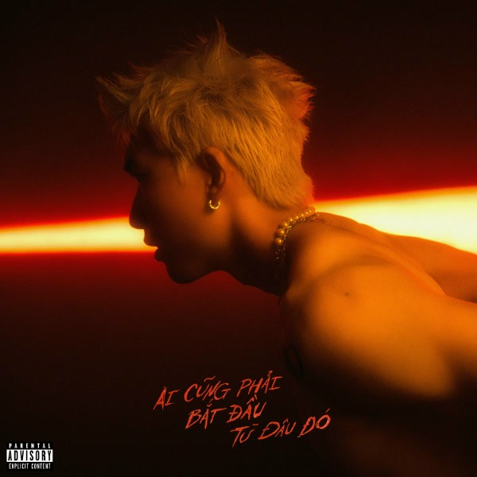

Cho Em An Toàn

Bài hát của HIEUTHUHAI
Lời bài hát
Họ thường nói, thường nói (nói, nói, nói)
Ai khi xem tình yêu quý hơn vàng (quý hơn vàng)
(Hey, Kewtiie) từ trong tim này đây
Những buổi hẹn hò anh nô nức, ta nắm tay đi và nô đùa
Suy nghĩ về nhau trong vô thức, đinh hương sao nở rộ như đang vô mùa
Anh luôn tỏ ra vui vẻ với câu chuyện em đang cười
Và dù nhạt nhẽo anh phải đảm bảo là cái độ hài hước của em trên thang mười
Và rồi giờ xuân sang, bên nàng, cảm xúc này được em trang hoàng
Thư tay trên bàn và lời hứa giữ em an toàn
Bảo vệ khỏi bầy sói mỗi đêm, những chuyện xấu mà bầy người thổi lên
Cắm luôn một vị trí mãi trong tim em, không hề đổi bên (đổi bên, đổi bên)
Điều anh ghét nhất phải nói lên (nói lên)
Là anh nhớ em ngay cả khi em ở bên
Giữ lấy cho chúng ta
Họ thường nói (họ thường nói)
Ai khi xem tình yêu quý hơn vàng (quý hơn vàng)
Đem cho ta những cảm giác an toàn
Không cần lo xa, vì không ai đổi thay
Chỉ cần nhớ (chỉ cần nhớ)
Ai luôn ngay phía sau
Ai cho em vòng tay êm ái? (I'll be own your way)
Không cho ai làm em phải đau
Cho, cho em an toàn
Cho, cho em an toàn
Từ trong tim này đây
Mình cùng song ca như 리쌍, ain't nuttin' but a G thang
Nhiều điều nuối tiếc mình viết lên trời, còn chuyện không vui mình phi tang
Hai ta luôn bên cạnh khi bao cô đang vây quanh (quanh, quanh)
Bao nhiêu an toàn cho em luôn cảm thấy được yêu (yêu)
Trái tim đầy những vết thương mà nó không vơi, nhưng chân thành là thứ duy nhất chảy ra
Hứa là mọi chuyện sẽ xứng đáng với tất cả những điều mà em đã trải qua
Giữ riêng cho ta những bí mật, yeah, we are both playing for keeps
Tương lai mình giống như Doublelift, bởi vì hai ta hòa làm một nè em ơi
Điều anh ghét nhất phải nói lên (nói lên)
Là anh nhớ em ngay cả khi em ở bên
Giữ lấy cho chúng ta
Họ thường nói (họ thường nói)
Ai khi xem tình yêu quý hơn vàng (quý hơn vàng)
Đem cho ta những cảm giác an toàn
Không cần lo xa, vì không ai đổi thay
Chỉ cần nhớ (cần nhớ)
Ai luôn ngay phía sau
Ai cho em vòng tay êm ái? (I'll be own your way)
Không cho ai làm em phải đau
Vì mình đã đôi khi cãi nhau
Và nhiều lúc đôi mi phải lau
Chỉ cần ta luôn ở bên
Họ thường nói
Ai khi xem tình yêu quý hơn vàng
Đem cho ta những cảm giác an toàn
Không cần lo xa, vì không ai đổi thay
Chỉ cần nhớ (chỉ cần nhớ)
Ai luôn ngay phía sau
Ai cho em vòng tay êm ái? (I'll be own your way)
Không cho ai làm em phải đau
Cho, cho em an toàn
Cho, cho em an toàn
Từ trong tim này đây
Cho em an toàn
Cho em an toàn
Ooh-oh-oh
Từ trong tim này đây